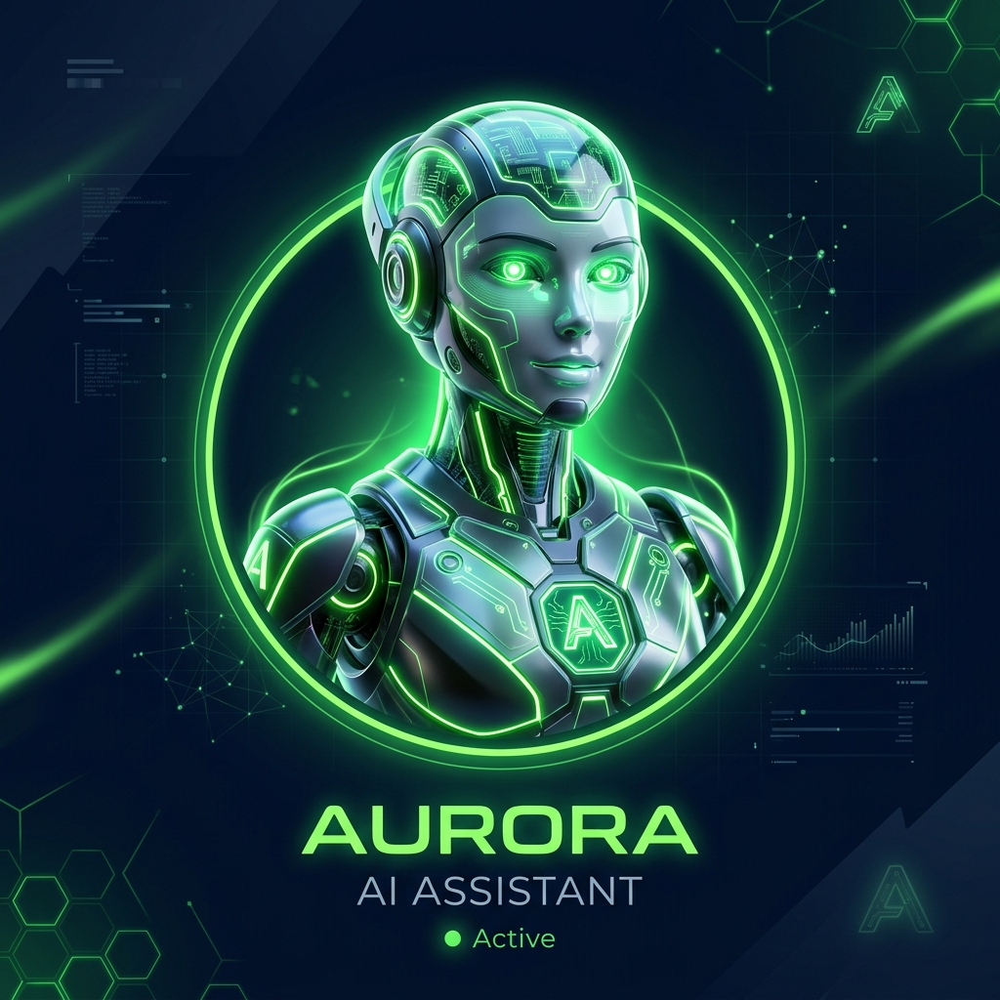

Workshop Praktis Untuk Digital Marketer Solopreneur Yang Ingin Kerja Sendiri Rasa Punya Tim Dengan Bantuan AI Assistant & OpenClaw.
"Sedang memantau performa iklan Meta Ads & menyusun laporan otomatis..."
Sebagai digital marketer, sering kali semua pekerjaan harus dilakukan sendiri. Anda terjebak dalam rutinitas teknis yang melelahkan.
Mulai dari analisa campaign, membuat copywriting, menjawab chat, membuat laporan, hingga optimasi iklan dilakukan satu orang.
Waktu habis untuk pekerjaan berulang, membuat Anda capek secara mental dan tidak punya energi untuk memikirkan strategi besar.
Tanpa tim, kapasitas kerja Anda terbatas. Ingin merekrut karyawan baru, tapi biaya gaji dan operasional terlalu tinggi.
"Apakah Anda ingin terus-menerus menukar waktu dengan pekerjaan teknis repetitif, atau saatnya melipatgandakan kapasitas kerja tanpa menambah beban gaji karyawan?"
Dengan AI Assistant dan OpenClaw, Anda dapat membangun sistem kerja otomatis yang membantu berbagai aktivitas digital marketing Anda tanpa lelah.
Generate puluhan variasi iklan, caption, dan landing page copy dalam hitungan detik.
Membaca data performa iklan Anda dan menyusun insight laporan otomatis ke dashboard Anda.
Jadikan AI sebagai tempat penyimpanan pengetahuan produk, SOP, dan database bisnis Anda.
Mulailah membangun tim virtual Anda sendiri seperti di ekosistem SaaS modern.
Ikuti webinar praktis dan pahami konsep mendasar tentang bagaimana AI Worker / Karyawan AI bekerja.
Instalasi, setting model LLM, dan konfigurasi platform OpenClaw sesuai kebutuhan digital marketing Anda.
Mulai delegasikan tugas-tugas marketing repetitif ke AI, dan bekerjalah dengan efisiensi layaknya memiliki tim besar.
Ketika ide konten baru muncul di kepala Anda tengah malam, AI langsung merespons untuk melakukan brainstorming ide dan membuat draf naskah seketika.
Ketika performa campaign iklan menurun, AI mendeteksi anomali data, menganalisis penyebabnya, lalu memberikan rekomendasi optimasi.
Ketika tiba waktunya menyusun laporan bulanan, AI mengumpulkan semua data dari berbagai tool lalu menyusun insight ringkas untuk Anda.

Belajar secara langsung bersama praktisi berpengalaman yang telah mengintegrasikan AI Assistant & OpenClaw secara aktif untuk mendukung operasional harian tim digital marketing.
Jawaban dari keraguan Anda mengenai Karyawan AI dan webinar ini.
Tidak masalah. Materi dirancang khusus untuk praktisi digital marketing dan pelaku bisnis dengan pendekatan praktis langkah-demi-langkah, tanpa mewajibkan latar belakang coding profesional.
Tidak harus. Kami akan membagikan berbagai pilihan model bahasa (LLM) dari yang gratis, murah berbayar per-token (API keys), hingga alternatif fallback model yang efisien biaya.
Ya. Webinar ini mengulas konsep fundamental Karyawan AI dari nol dan mengenalkan platform OpenClaw secara mudah agar ramah bagi pemula sekalipun.
Ya, rekaman webinar akan tersedia dan dapat Anda akses kembali untuk dipelajari secara mandiri pasca-acara.
Tentu saja. Di akhir pemaparan webinar akan dibuka sesi diskusi dua arah (tanya jawab langsung via Zoom) bersama narasumber.
Anda akan memahami konsep dasar, alur kerja, dan pondasi instalasi yang matang untuk langsung mulai merakit dan mengujicoba AI Assistant pertama Anda.
Mulailah membangun Karyawan AI pertama Anda untuk mendukung seluruh operasional dan melipatgandakan performa digital marketing bisnis Anda.